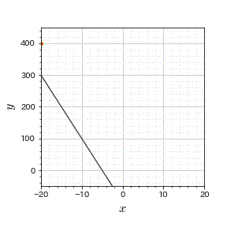

目次
01包絡線とは
定義
$\alpha$ をパラメータとする曲線群 $f(\boldsymbol{x}|\alpha)=0$ の全てと接線を共有する関数．
具体例
$y = 2\alpha x - \alpha^2$ の包絡線は $y = x^2$ である．
02包絡線定理
包絡線定理とは
$\alpha$ をパラメータとする最適化問題 \[ \min_{\boldsymbol{x}}f(\boldsymbol{x}|\alpha) \] \begin{align} \text{s.t.} \quad g_j(\boldsymbol{x}|\alpha) &= 0 && \forall i\\ h_k(\boldsymbol{x}|\alpha) &\geq 0 && \forall j \end{align} について， $f(\boldsymbol{x}|\alpha), g_j(\boldsymbol{x}|\alpha), h_k(\boldsymbol{x}|\alpha)$ が全ての $x_i, \alpha$ について微分可能であるとする．
この最適化問題の最適値を $Z(\alpha)$ とすると，以下の式が成り立つ： \[ \frac{\partial Z(\alpha)}{\partial \alpha} = \frac{\partial f(\boldsymbol{x}|\alpha)}{\partial \alpha} - \sum_j \lambda_j \frac{\partial g_j(\boldsymbol{x}|\alpha)}{\partial \alpha} - \sum_k \mu_k \frac{\partial h_j(\boldsymbol{x}|\alpha)}{\partial \alpha} \] ここで， $\lambda_j, \mu_k$ はそれぞれ制約条件 $g_j(\boldsymbol{x}|\alpha)=0, h_k(\boldsymbol{x}|\alpha) \geq 0$ に対応するラグランジュ乗数である．
証明
まず，上記の最適化問題の(1次の)最適性条件を考える． 最適性条件は以下の通り： \begin{align} \frac{\partial f(\boldsymbol{x}|\alpha)}{\partial x_i} &= \sum_j \lambda_j \frac{\partial g_j(\boldsymbol{x}|\alpha)}{\partial x_i} + \sum_k \mu_k \frac{\partial h_j(\boldsymbol{x}|\alpha)}{\partial x_i} && \forall i \\ g_j(\boldsymbol{x}|\alpha) &= 0 && \forall j \\ \mu_k h_k(\boldsymbol{x}|\alpha) &= 0, \quad \mu_k \geq 0, \quad h_k(\boldsymbol{x}|\alpha)\geq 0 && \forall k \end{align}
上記の最適化問題の最適解を $\boldsymbol{x}^*(\alpha)$ とおくと以下の式が成り立つ： \[ Z(\alpha) = f(\boldsymbol{x}^*(\alpha) | \alpha) \] \[ \boldsymbol{x}^*(\alpha) \equiv \arg\min_{\boldsymbol{x}} \left[ \quad f(\boldsymbol{x}|\alpha) \quad | \quad \text{s.t.} \quad g_j(\boldsymbol{x}|\alpha) = 0, h_k(\boldsymbol{x}|\alpha) \geq 0 \quad \right] \]
※重要なのはここから※
ここで，今後のために最適値関数に特別な項(最適性条件から0となる項)を追加する(ラグランジュ関数)． \[ Z_2(\alpha) = f(\boldsymbol{x}^*(\alpha) | \alpha) - \sum_j \lambda_jg_j(\boldsymbol{x}^*(\alpha)|\alpha) - \sum_k \mu_kh_j(\boldsymbol{x}^*(\alpha)|\alpha) \]
この $\boldsymbol{x}^*(\alpha)$ が微分可能な関数である場合，以下の式が成立する： \begin{align} \frac{\partial Z(\alpha)}{\partial \alpha} = & \quad \left[ \left( \sum_i \frac{\partial f(\boldsymbol{x}|\alpha)}{\partial x_i} \frac{\partial x_i^*(\alpha)}{\partial \alpha} + \frac{\partial f(\boldsymbol{x}|\alpha)}{\partial \alpha} \right)\right. \\ & \qquad \left. - \sum_j \lambda_j \left( \frac{\partial g_j(\boldsymbol{x}|\alpha)}{\partial x_i} \frac{\partial x_i^*(\alpha)}{\partial \alpha} + \frac{\partial g_j(\boldsymbol{x}|\alpha)}{\partial \alpha} \right) - \sum_k \mu_k \left( \frac{\partial h_j(\boldsymbol{x}|\alpha)}{\partial x_i} \frac{\partial x_i^*(\alpha)}{\partial \alpha} + \frac{\partial g_j(\boldsymbol{x}|\alpha)}{\partial \alpha} \right) \right]_{\boldsymbol{x}= \boldsymbol{x}^*(\alpha)} \\ =& \quad \frac{\partial x_i^*(\alpha)}{\partial \alpha} \left[ \frac{\partial f(\boldsymbol{x}|\alpha)}{\partial x_i} - \sum_j \lambda_j \frac{\partial g_j(\boldsymbol{x}|\alpha)}{\partial x_i} - \sum_k \mu_k \frac{\partial h_j(\boldsymbol{x}|\alpha)}{\partial x_i} \right]_{\boldsymbol{x}=\boldsymbol{x}^*(\alpha)} \\ &\qquad + \frac{\partial f(\boldsymbol{x}|\alpha)}{\partial \alpha} - \sum_j \lambda_j \frac{\partial g_j(\boldsymbol{x}|\alpha)}{\partial \alpha} - \sum_k \mu_k \frac{\partial h_j(\boldsymbol{x}|\alpha)}{\partial \alpha} \end{align}